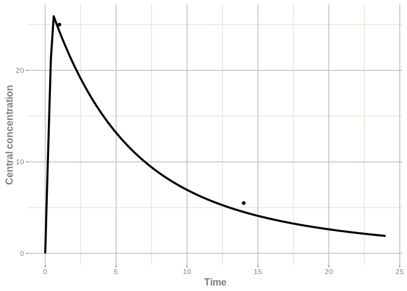

Overview
posologyr is an R package for drug treatment individualisation, taking advantage of population pharmacokinetics (popPK), patient characteristics, and the results of therapeutic drug monitoring.
posologyr provides functions for estimating the pharmacokinetic (PK) parameters:
-
poso_simu_pop()for estimating the a priori distributions of popPK parameters by Monte-Carlo simulations -
poso_estim_map()for computing the Maximum A Posteriori (MAP), aka Empirical Bayes Estimates (EBE), of individual PK parameters from the results of therapeutic drug monitoring -
poso_estim_mcmc()for estimating the posterior distributions of individual PK parameters by Markov Chain Monte Carlo (MCMC)
Functions for dosage optimisation are included in posologyr:
-
poso_time_cmin()computes the time needed to reach a target trough concentration (Cmin) -
poso_dose_auc()estimates the optimal dose to reach a target AUC -
poso_dose_ctime()estimates the optimal dose to reach a target concentration at any given time
Posologyr requires a popPK model written in the RxODE mini-language.
Installation
You can install the development version of posologyr from GitHub with:
# install.packages("devtools")
devtools::install_github("levenc/posologyr")Example
This example of bayesian dosage adaptation is based on a fictitious popPK model of tobramycin, and data of therapeutic drug monitoring.
Patient data (here: Patient01’s lab results) are organised in a dataframe following RxODE conventions.
library(posologyr)
df_patient01 <- data.frame(ID=1,TIME=c(0.0,0.5,1.0,14.0),
DV=c(NA,NA,25.0,5.5),
AMT=c(1000,-1000,0,0),
EVID=c(10102,10102,0,0),
CLCREAT=80,WT=65)
df_patient01
#> ID TIME DV AMT EVID CLCREAT WT
#> 1 1 0.0 NA 1000 10102 80 65
#> 2 1 0.5 NA -1000 10102 80 65
#> 3 1 1.0 25.0 0 0 80 65
#> 4 1 14.0 5.5 0 0 80 65TIME is in hours, AMT is a rate in milligram/hour for the zero-order infusion of duration 0.5 hours: 500 mg of tobramycin are administered over 30 minutes.
The sample tobramycin prior model is supplied with posologyr. Following the same structure, user-defined models can be added.
The posologyr() function create a posologyr list, from the prior model and the individual data.
patient01_tobra <- posologyr(mod_tobramycin_2cpt_fictional,df_patient01)The estimates of the fixed effects parameters are available from the object created by posologyr.
patient01_tobra$theta
#> THETA_ke THETA_V THETA_k12 THETA_k21
#> 0.210 19.800 0.041 0.120The MAP estimates of the individual ETAs and PK parameters can be computed easily.
poso_estim_map(patient01_tobra)
#> [[1]]
#> ETA_ke ETA_V ETA_k12 ETA_k21
#> -0.6828811 -0.0663349 0.0000000 0.0000000
#>
#> [[2]]
#> ▂▂▂▂▂▂▂▂▂▂▂▂▂▂▂▂▂▂▂▂▂▂▂▂▂▂▂▂▂▂ Solved RxODE object ▂▂▂▂▂▂▂▂▂▂▂▂▂▂▂▂▂▂▂▂▂▂▂▂▂▂▂▂▂
#> ── Parameters ($params): ───────────────────────────────────────────────────────
#> THETA_ke CLCREAT WT THETA_V THETA_k12 THETA_k21 ETA_ke
#> 0.2100000 80.0000000 65.0000000 19.8000000 0.0410000 0.1200000 -0.6828811
#> ETA_V
#> -0.0663349
#> ── Initial Conditions ($inits): ────────────────────────────────────────────────
#> centr periph AUC
#> 0 0 0
#> ── First part of data (object): ────────────────────────────────────────────────
#> # A tibble: 2 x 13
#> time tTVke tTVV tTVk12 tTVk21 ke V k12 k21 Cc centr periph
#> <dbl> <dbl> <dbl> <dbl> <dbl> <dbl> <dbl> <dbl> <dbl> <dbl> <dbl> <dbl>
#> 1 1 -1.39 2.97 -3.19 -2.12 0.126 18.2 0.041 0.12 24.3 442. 13.8
#> 2 14 -1.39 2.97 -3.19 -2.12 0.126 18.2 0.041 0.12 4.52 82.3 46.4
#> # … with 1 more variable: AUC <dbl>
#> ▂▂▂▂▂▂▂▂▂▂▂▂▂▂▂▂▂▂▂▂▂▂▂▂▂▂▂▂▂▂▂▂▂▂▂▂▂▂▂▂▂▂▂▂▂▂▂▂▂▂▂▂▂▂▂▂▂▂▂▂▂▂▂▂▂▂▂▂▂▂▂▂▂▂▂▂▂▂▂▂An optimal dose can be estimated to reach a concentration of 30 mg/l half an hour after the end of the infusion.
poso_dose_ctime(patient01_tobra,time_c = 1,duration = .5,target_conc = 30)
#> [1] 618.2356To further optimise the dosage, the time needed to reach a Cmin < 0.5 mg/l after an infusion of 620 mg over 30 minutes can be estimated.
poso_time_cmin(patient01_tobra,dose = 620, duration = 0.5, target_cmin = 0.5)
#> [1] 45.6As a result, the administration of 620 mg every 48 hours can be advisable for Patient01.
Sample plots
The RxODE models can be used to plot the individual PK profile.
library(ggplot2)
# compute the population and individual PK parameters
pop_pk <- poso_simu_pop(patient01_tobra)[[2]]
indiv_pk_map <- poso_estim_map(patient01_tobra)[[2]]
indiv_pk_mcmc <- poso_estim_mcmc(patient01_tobra)[[2]]
# add sampling times
pop_pk$time <- seq(0,24,by=0.2)
indiv_pk_map$time <- seq(0,24,by=0.2)
indiv_pk_mcmc$time <- seq(0,24,by=0.2)
# get the individual observations from the tdm_data of Patient01
indiv_obs <- patient01_tobra$tdm_data[,c("DV","TIME")]Plot the distribution of the prior population PK profiles + individual observations.
names(indiv_obs) <- c("eff","time")
plot(confint(pop_pk,"Cc", level=0.95),ylab="Central concentration") +
ggplot2::geom_point(data=indiv_obs, na.rm=TRUE)
#> ! in order to put confidence bands around the intervals, you need at least 2500 simulations
#> summarizing data...done
Plot the individual MAP PK profile + individual observations.
names(indiv_obs) <- c("value","time")
plot(indiv_pk_map,Cc) +
ggplot2::ylab("Central concentration") +
ggplot2::geom_point(data=indiv_obs, na.rm=TRUE)
Plot the distribution of the individual PK profiles + individual observations.
names(indiv_obs) <- c("eff","time")
plot(confint(indiv_pk_mcmc,"Cc", level=0.95),ylab="Central concentration") +
ggplot2::geom_point(data=indiv_obs, na.rm=TRUE)
#> ! in order to put confidence bands around the intervals, you need at least 2500 simulations
#> summarizing data...done
Acknowledgments
posologyr takes advantage of the simulation framework provided by the RxODE package.
posologyr’s estimation functions were based on Marc Lavielle’s shiny app